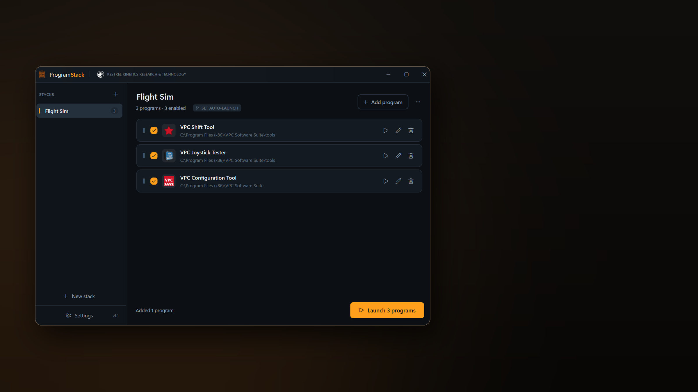

Windows launcher and startup utility
ProgramStack
Launch your whole flight sim setup, or any set of programs, in one click. Drop your shortcuts into a stack, press Launch, and everything starts in the order you set with whatever waiting time each one needs.
The app
One click brings the whole rig up.
ProgramStack keeps ordered lists of programs, called stacks. A target can be an executable, a shortcut, a batch file or a link such as a Steam URI, so games sit alongside utilities as first class entries.
It was built for flight simulation rigs, where the sim needs a head start before head tracking, VATSIM clients and add-ons connect to it. The same ordering and waiting works just as well for streaming layouts, work setups, development environments and gaming sessions.
Keep a Flight Sim stack, a Work stack and a Streaming stack side by side and switch between them in the sidebar. ProgramStack can also start with Windows, sit quietly in the notification area and fire a chosen stack the moment you sign in.
Features
Ordered launching, with everything set the way you need it.
Loading image feed...
One Click, In Order
Every program in a stack starts in the order you set, and each one can hold the queue for a chosen number of seconds after it launches.
That is what lets a simulator reach its menu before the add-ons that connect to it are allowed to start.
Drag and Drop Setup
Drop executables, shortcuts, link files or batch files straight onto the window. Shortcuts are unwrapped to their real target automatically.
Rows are reordered by dragging their handle, so rebuilding a launch sequence takes seconds.
Per-Program Control
Each entry has its own editor: command line arguments, working folder, wait after launch, run as administrator, and skip if the program is already running.
Entries can also be disabled without deleting them, so a stack keeps its full setup while you launch a trimmed version of it.
Auto-Launch Triggers
Arm a stack to watch for a program starting. Launch the simulator from Steam, the Xbox app or a desktop shortcut and the rest of the stack follows on its own.
The program that triggered the stack is never started twice, and a cooldown stops any loop.
Tear It Back Down
Tick the programs that should close when the trigger program exits, so quitting the sim shuts the supporting tools down with it.
Programs with a window are asked to close politely, so anything with unsaved work can put a dialog up and stay open rather than being forced.
Windows and Displays
Each program can be pinned to a monitor and opened normal, minimised or maximised, with the placement applied once its window appears.
ProgramStack runs quietly from the notification area, can launch any stack from its menu, and accepts command line switches for Stream Deck buttons and custom shortcuts.
Browse all screenshots
Support & purchase
Quick facts
- App
- ProgramStack
- Type
- Windows launcher and startup utility
- Platform
- Windows 10 and 11. Installer, portable build and a small build for the .NET 10 Desktop Runtime.
- Store
- Buy on itch.io